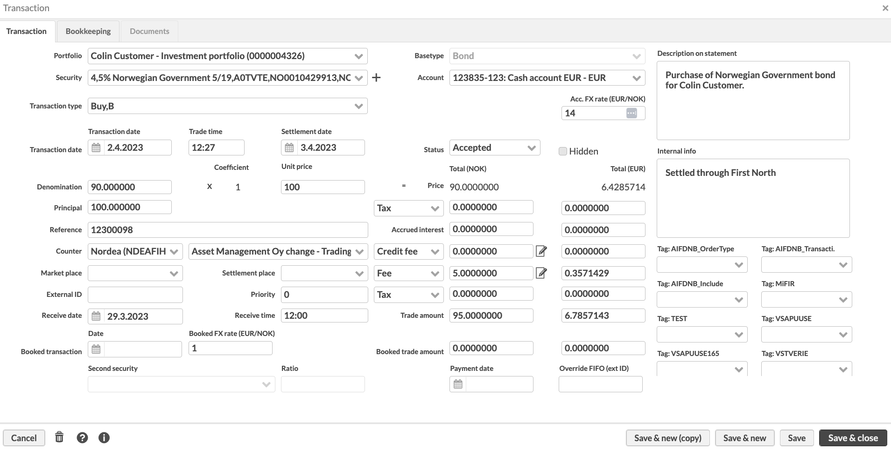

Transaction window
Transaction window allows you to define a new transaction or to view and modify the information of existing transactions.
You can open the Transaction window from any of the transaction listings available in FA: in addition to searching for transactions in the Transactions view, transactions are also visible in the Transaction listing on the Overview and Positions view. You can open the transaction information in the transaction window by double-clicking the transaction or by right-clicking the transaction and choosing Modify.
When creating a new transaction, first you have to choose the type of the security you are creating the transaction to. This affects the fields available in the window: for example, accrued interests are only available for bonds and such and not available for regular stocks. Choose the type either from the menu, or when creating a transaction through an existing transaction or security, the type is pre-selected for you.
Transaction information
For a new transaction, the transaction information is defined in the fields visible - the fields available vary slightly depending on the basic transaction type chosen. A red star indicates a mandatory field.
|  |
The following fields are available (fields marked with * are required):
- Portfolio*
The portfolio you want to create the transaction in.
- Basic type
The chosen basic type of the transaction or allows you to choose the basic type: the chosen of the basic type influences the fields available for defining the transaction. The available basic types are cash, stock, bond, fund, discount, deposit, currency, option and future.
- Security*
the security related to the transaction. The + icon next to the security field allows you to create a new security directly in the transaction window in case the security to be linked to you transaction cannot yet be found from the system. When choosing to create a new security, the possible security types are filtered to match the security base type chosen to the transaction. When you save the security, it is automatically selected as the security of the transaction.
- Transaction type*
The transaction type from the alternatives, which are defined in Transaction type Preferences. You can only see the transaction types which are linked to the selected security's security type, or if no security is selected, linked to all security types with the selected security type's base type.
- Account*
The account to record the money transactions caused by the transaction. You can see only accounts with the security, transaction or portfolio currency. Shared accounts (an account of the same customer's portfolio defined to be shared to the portfolios of the customer, the account of a main portfolio automatically shared to its sub-portfolios, or an account of a subportfolio shared to all parent portfolio's subportfolios) are indicated with a star * before account number and name. You can see the shared account's portfolio in brackets.
When there is an exchange rate related to the transaction, appropriate FX rate field(s) are available in the Transaction window below the account field (see Transaction's currency below for more details).
- Report FX rate
The appropriate report exchange rate, or exchange rate between you transaction's security's currency and you portfolio's currency, for the transaction. You can fetch the exchange rate to the field with a question mark (?), so the system sets the exchange rate to be the transaction day's market price of the currency. If no market price is can be found for the transaction date, the latest available market price is used. You can have FX rates automatically updated for transactions (see Update transaction FX rates in FA Admin guide).
- Account FX rate
The appropriate account exchange rate, or exchange rate between you transaction's security's currency and you portfolio's account's currency, for the transaction. You can fetch the exchange rate to the field with a question mark (?), so the system sets the exchange rate to be the transaction day's market price of the currency. If no market price is can be found for the transaction date, the latest available market price is used. You can have FX rates automatically updated for transactions (see Update transaction FX rates in FA Admin guide).
Transaction dates are defined in the appropriate date fields below the transaction type.
- Transaction date*
The transaction date. Transaction date determines when the the transaction actually occurred (i.e. when the transaction originally took effect). Positions, portfolio's content and most reports are most often based on the transaction date. For more information on how to select dates, see Selecting dates.
- Trade time
The time of the trade either in the format of hh:mm, for example 14:30, or in the format of hh:mm:ss, for example 14:30:15.
- Settlement date
The settlement date of the transaction. For more information on how to select dates, see Selecting dates. You can also set the settlement date the following ways:
Enable the settlement date to be set automatically by enabling the "Set transaction's settlement date automatically based on transaction date" in Transactions Preferences. When enabled, whenever you enter a transaction date, the settlement date is automatically set a certain number of business days from the transaction date. If the Enable settlement date has been enabled for the transaction's security (or cash transaction's currency's) in the Security window, the number of days defined in Settlement date is used to calculate the settlement date for trades in that security, or if not defined per security, the Amount of business days configured in Transactions Preferences is used to calculate the settlement date. In addition to how many business days trades take to settle, the transaction's security's (or cash transaction's currency's) holiday calendar is used to determine which days are business days.
Set the settlement date a certain number of days from the transaction date by writing a number between 1 and 99 to the field: the number you insert indicates the number of business days the settlement date is set after the transaction date. The transaction's security's (or cash transaction's currency's) holiday calendar is used to determine which days are business days.
Calculate the settlement date with a question mark (?), when the system calculates the settlement date based on the transaction date, transaction's security's (or cash transaction's currency's) holiday calendar, and the number of business days defined either for the security (if the Enable settlement date has been enabled), or if not defined per security, in the preferences.
- Status
The status of the transaction: Accepted, Deleted, Not finished. Only accepted transactions are visible in the portfolio and have an effect on the portfolio total and portfolio reports. Transactions with any status are searchable in the transactions view.
- Hidden
Hide this transaction from the Overview’s transaction listing. Hidden transactions still affect your positions, but they are not shown on the Overview’s transaction listing. This allows you to filter the Overview to only show transactions you need in your day-to-day work to get an overview of your client’s investments, while you can access other transactions through the Transactions view. This is especially useful for bookkeeping transactions, such as deferrals or value adjustments, which don’t directly affect how much you own, but only alter the position’s values for bookkeeping purposes.
The transaction itself, or the values of the transaction, are defined in the appropriate number fields in the window, starting from the left below the dates.
- Amount
The amount / denomination of the transaction. Amount can have as many decimals as defined in the Security type Preferences or as the block size of the transaction's security - only the allowed number of decimals can be inputted in the transaction window.
- Coefficient
The coefficient of the transaction. The field is available only for transaction of the basic type bond with a linked index (i.e. for index linked bonds). You can also set the coefficient the following ways:
If linked index information is defined for the security (Extra info tab of the Security window), you can calculate the coefficient to the transaction by typing a question mark (?) to the field, when the system automatically calculates the coefficient based on the linked index and the index base value.
Insert the reference index value with a question mark (e.g. 123?) into the field, when the system automatically calculates the coefficient based on the inserted reference index and the index base value.
- Unit price
The unit price of the chosen security. You can also set the unit price the following ways:
Fetch the unit price to the field with a question mark (?), when the system sets the unit price to be the transaction day's market price of the transaction's security. If no market price can be found for the transaction date, the latest available market price is used.
For bonds, when appropriate bond information has been defined for the bond security, the unit price can also be calculated by setting a yield to the unit price field with % (e.g. 3.45%), when the system automatically calculates the unit price according to YTM.
- Price
The system automatically calculates the price of the transaction based on the inserted values. If the transaction required an account exchange rate, price and all other values below it are also shown against the account's currency, converted with the defined account exchange rate.
- Principal
Original principal amount of the bond. Original principal amount is relevant for the amortized bonds: it is used to calculate partial redemptions for the bond. This field is available for transactions with the Bond security type that have amount effect, meaning that they add or reduce the position amount in portfolio.
When there are taxes related to the transaction, choose the tax type from the alternatives and define the tax to the corresponding field. The tax can either add or reduce the trade amount: the effect of the tax is defined in the transaction type settings, in Transaction type Preferences. You can define two separate taxes on a transaction: the upper tax field calculates the amount of the tax from the price of the transaction (for example tax from dividend), while the lower tax field calculates the amount of the tax from the fees (for example VAT from transaction costs).
- Tax type
The tax type from alternatives, which are defined in Tax type Preferences (see Preference - Taxation). The tax type defines the type of tax in question (for example Capital gains tax or Withholding tax).
- Tax
The tax of the transaction. A plain numerical value is interpreted in terms of money, and there are different ways you can trigger the system to calculate the tax on your transaction:
When you define the tax with as a percentage (% sign after the numerical value), the system calculates the money value of the tax from the price of the transaction (upper tax field) or from the fees (lower tax field).
You can also calculate the tax with a question mark (?), when the tax percentage and the tax type are fetched from default tax rates (applicable only if an appropriate default tax rate has been defined).
- Accrued interest
Record the paid / received accrued interest of the transaction, up to the settlement date of the transaction. The field is available only for transaction of the base type BOND If coupon/fixing information is defined for the security (Extra info tab of the Security window), you can calculate the accrued interest to the transaction by typing a question mark (?) to the field. The system automatically calculates the accrued interest up to the settlement date.
- Accrual
Record the paid/received accrued income included in your transaction's unit price. The field is available only for transactions of the base type FUND. Unit price already includes the accrued income, and thus accrual doesn’t have an effect on your transaction's trade amount. If accrual component is recorded within security's market data (Market data info tab of the Security window), you can calculate the accrual to the transaction by typing a question mark (?) to the field. The system automatically calculates the accrual on the transaction date. This field is used for accrued income management with mutual funds: NAV of a fund includes accrued income, but when you subscribe into a fund, you pay for the income accrued before your subscription, and when you redeem your shares, you receive the accrued income not yet paid out. Your position's purchase value excludes the paid accrual recorded on your transaction, while your position's purchase unit price includes accrual.
When there are costs related to the transaction, either choose the cost type from the alternatives and define the cost to the corresponding field, or click the edit icon to define a more detailed break-down of transaction's costs (see Break-down of transaction's costs below for more details). The cost can either add or reduce the trade amount: the effect of the cost is defined in the transaction type settings, in Transaction type Preferences. The cost can be defined for a transaction in two fields: the upper cost field has a default name Credit fee, while the lower cost field has a default name Fee.
- Cost type
The cost type from alternatives, defined in Preference - Transactions. The cost type defines the type of cost in question (for example Advisory fee, Custodian fee or Broker commission). If you don't select a cost type, your costs are identified as generic Credit fee and Fee.
- Credit fee
The credit fee of your transaction. A plain numerical value is interpreted in terms of money, and there are different ways you can trigger the system to calculate the tax on your transaction:
When you define the fee as a percentage (% sign after the numerical value), the system automatically calculates the money value of the fee from the price of the transaction.
The edit icon next to the field allows you to define a more detailed Break-down of transaction's costs, allowing you to break down your transaction costs into as many different types of costs as you need.
- Fee
The fee of your transaction. A plain numerical value is interpreted in terms of money, and there are different ways you can trigger the system to calculate the tax on your transaction:
When you define the fee as a percentage (% sign after the numerical value), the system automatically calculates the money value of the fee from the price of the transaction.
If transaction-related portfolio fees (fee type "transaction") are defined to the portfolio in the Fees tab of the Portfolio window, the defined fee can be applied to this field by typing a question mark (?) to the field. The system calculates the value of the fee by using the defined transaction fee percentage.
The edit icon next to the field allows you to define a more detailed Break-down of transaction's costs, allowing you to break down your transaction costs into as many different types of costs as you need.
- Total trade amount
The system automatically calculates the total trade amount of the transaction based on the values in the Total column, taking into account the tax and fees. Modifying the total trade amount will adjust the value in the Unit price field in order for the values to add up correctly. If there are no values defined for the Amount and Unit price fields, setting the total trade amount will set the total trade amount to the Amount field and 1 to the Unit price field. If the transaction required an account exchange rate, trade amount and all other values above it are also shown against the account's currency, converted with the defined account exchange rate.
Below the transaction values on the left, you can define additional information to your transaction.
- Reference
The reference of the transaction. You can automatically generate the reference number to a transaction with a question mark (?), when the system generates a reference number to the transaction with the formula portfolio ID * 100 000 + transaction external ID + control number. Portfolio ID is used as a basis of the reference number by default, but if the portfolio ID is not a number, then portfolio external ID is used. If the portfolio external ID is not a number, then portfolio database ID is used. The control number is calculated based on the formula defined for forming reference numbers.
- Counter
A counter and a counter portfolio for your transaction. The first dropdown for the counter contact first lists contacts of the type Counter party and Custody in alphabetical order, and then the rest of the contacts within the system in alphabetical order. The second dropdown for the counter portfolio lists all portfolios within the system in alphabetical order.
- Market place
The marketplace (MIC) of the transaction from the alternatives, which are defined in Marketplace Preferences. To find a marketplace, start typing the MIC code or marketplace name in the field.
- Settlement place
The settlement place (BIC) of the transaction from the alternatives, which are defined in Settlement place Preferences.
- External ID
External ID / number of your transaction. When creating a transaction, the system automatically generates an external ID for it by determining the next available number - the available number depends on whether you have selected transaction numbering to be handled on the portfolio or contact level within Transaction no. level field in the Contact window. For example, if the largest external ID in your portfolio at the moment is 123, the next transaction would get the external ID of 124. You can also modify the external ID manually or have the system re-generate it with the next available number by typing in a question mark (?). External ID can also include letters and other non-numeric characters - however, these can only be added manually and are not considered by the automatic external ID generation.
- Priority
The intra-day priority of the transaction with a number (-1, 0, 1, 2, 3 etc.). The transaction with the lowest priority has the highest number defined in the priority field (0 is lower than 1 and -1 is lower than 0). The default priority is 0. The priority field is used to order the transaction within one day, in other words, to define which transactions take effect first. If priorities have not been used, but if trade times are defined, the transactions take effect in trade time order (empty trade time is interpreted as 00:00 and takes effect before transactions with a later trade time). If priorities or trade times are not used, the transactions within a day are ordered based on the transaction external ID.
- Receive date
The date when you created the original trade order or received it from the client.
- Receive time
The time when you created the original trade order or received it from the client. Enter the time either in the format of hh:mm, for example 14:30, or in the format of hh:mm:ss, for example 14:30:15.
In the booked transaction information at the bottom of the window, you can define booked values for your transaction, for example, if an earlier transaction is entered and recorded to the portfolio at a later date. For example, Add transactions often have Booked values, e.g. different values for the original purchase, and different values for recording the transaction to the portfolio.
- Date
The booked transaction date.
- Booked exchange rate
The exchange rate, if the original exchange rate is different from the new exchange rate of the transaction (if no exchange rate is needed, define 1 as the exchange rate). The booked exchange rate can also be fetched to the field with a question mark (?), when the system fetches the exchange rate to be the booked transaction day's market price of the currency. If no market price is can be found for the transaction date, the latest available market price is used.
- Booked trade amount
The booked trade amount. The booked trade amount can also be fetched to the field with a question mark (?), when the system fetches the booked transaction day's market price of the transaction's security (if no market price is can be found for the booked transaction date, the latest available market price is used), and calculates the booked trade amount by multiplying the fetched price with the defined amount.
The second security and ratio fields are available only if the selected transaction type has been configured to support a second security. The transaction type configurations can be found from Transaction type Preferences (see Preference - Transactions).
- Second security
The second security for the transaction. For example, for issues, the second security often shows which security the issue is based on.
- Ratio
The ratio in the form of x:x, for example 1:2. For example, for splits, the ratio tells the split ratio.
- Removed accrual
Removed accrual from security A when making an exchange for security B. The removed accrual is sold and realized on the exchange date. The field is available only for transactions of the base type FUND.
Payment date field allows you to separate between payment date and settlement date.
- Payment date
The payment date of your transaction, when the payment date is different from your transaction's settlement date. Payment date field is available for security trades linked to an account, since there is no need to separately define a payment date to cash transactions. Payment date is optional, and only affects the date when your account balance changes.
Override FIFO field allows you to override the otherwise applied FIFO order and specify the order of the purchase lots to sell.
- Override FIFO (ext ID)
The order of purchase lots to sell. By default, positions are sold in FIFO order. To override it, enter the external transaction IDs that represent purchase lots in the order you want to sell them. If the amount of the purchase lots you specify is less than the amount to sell, the rest of the position is sold in the FIFO order. Enter the external IDs separated by commas without spaces (for example: 5,12,8). You can also override FIFO by importing a list of external transaction IDs in a CSV file of transactions or trade orders.
If you specify only one purchase lot, you can make fractional adjustments:
To increase the amount on an existing lot without creating a new lot, use the "Equalization credit (EQCR)" transaction type and specify the external transaction ID of the existing lot you want to increase in this field.
To decrease the amount on a specific lot without leaving out any purchase lots from the FIFO chain, use the "Equalization debit (EQDE)" transaction type and specify the external transaction ID of the existing lot you want to increase in this field.
Note that the purchase lots you enter need to refer to transactions in the same portfolio.
- Description on statement
An optional description of the transaction, which is visible for example on the bank statement report.
- Internal info
An optional description of the transaction, which is visible only internally in the Transaction window.
- Tags
Tags from the alternatives defined in Tags Preferences (see Preference - Tags). Tags can be defined in three different ways:
Grouped tags (select one): you can select one tag from each tag group, grouped in separate dropdowns. Only one tag in each tag group can be chosen. To group tags in a dropdown, defined them with a hyphen as "group - tag".
Grouped tags (select multiple): you can select multiple tags from each tag group, grouped as separate sets of checkboxes. You can check multiple tags within each tag group. To group tags as a set of checkboxes, defined them with a colon as "group : tag".
Individual tags: search for individual tags by typing the tag in the field and choosing the correct tag from the list below the field - all available tags are shown from the downward arrow on the keyboard. You can select multiple individual tags.
Breakdown of transaction costs
Due to regulation, recording only two separate costs in your transaction might not be enough for recording detailed ex-post disclosure of costs. The breakdown of transaction costs allows you to categorize and break down your transaction costs in as much detail as you need, allowing you to track all your costs with accuracy and transparency.
In order to break down the transaction costs further, you can click the  icon next to the cost fields and define a detailed breakdown of costs. With this approach, you can easily record in your breakdown of costs for as many different cost types as you need. The cost breakdown window is pre-filled with all cost types defined in Preference (see Preference - Transactions). You can define the breakdown separately for both cost fields, allowing you to maintain up to two sets of breakdowns of costs. If you need to break down your costs into more categories, add more transaction cost types in Preference.
icon next to the cost fields and define a detailed breakdown of costs. With this approach, you can easily record in your breakdown of costs for as many different cost types as you need. The cost breakdown window is pre-filled with all cost types defined in Preference (see Preference - Transactions). You can define the breakdown separately for both cost fields, allowing you to maintain up to two sets of breakdowns of costs. If you need to break down your costs into more categories, add more transaction cost types in Preference.
When you save your cost breakdown with the Save & close button, the cost field shows the aggregated total of your breakdown. If you define a cost breakdown, you can't edit the aggregate value directly anymore. If you need to edit it, make changes in the cost breakdown.
You can also use the two cost fields to categorize your cost breakdowns. For example, you can use the upper cost field for your one-off costs breakdown, and the lower cost field for your ongoing costs breakdown.

Transaction cost categorization
Due to regulation, the different cost types you enter in the detailed break-down of transaction costs should also be categorized into proper categories to extensively record ex-post disclosure of costs. Transaction cost categorization allows you to categorize all your transaction costs as Portfolio (investment service costs), Security (product costs) or 3rd (third party payments), and then further as One-off charges, On-going charges, Charges related to transactions, Charges related to ancillary services or Incidental charges, or you can use up to five Other costs categories with accuracy and transparency.
Transaction cost categories can be set through Preferences either on your cost transactions or transaction costs:
Categorizing cost transactions. You can categorize all your cost transactions through Transaction type Preferences. When a category is set to a cost transaction, the trade amount of such a transaction is summed into the Every time you save a transaction, ex-post disclosure of costs is calculated based on the categorization you have defined and the values you have entered on your transaction. All cost categories are available as columns on the transaction listings in security currency (no abbreviation), portfolio currency (identified with abbreviation (PF)) and account currency (identified with abbreviation (ACC)), categorized as investment service costs (identified with abbreviation (PF)), product costs (identified with abbreviation (sec)) and third party payments (identified with abbreviation (3rd)). If the column name only includes one abbreviation, that indicates the category and the values are shown in security currency, and if the column name includes both abbreviations, they are stated in order (currency, category). For example, column "On-going charges (PF)" shows on-going charges in security currency categorized as investment service costs, "On-going charges (ACC, PF)" shows on-going charges in account currency categorized as investment service costs, and "On-going charges (PF, PF)" shows on-going charges in portfolio currency categorized as investment service costs.selected cost category. You can for example categorize the total trade amount of your asset management fees as On-going charges.
Categorizing transaction costs. You can categorize all your transaction cost types through Transaction cost type Preferences, allowing you to associate a category to each of them. When a category is set to a transaction cost type, the amount of the cost is summed into the selected cost category. You can for example categorize the brokerage fees you record on your transactions as Charges related to transactions.
Every time you save a transaction, ex-post disclosure of costs is calculated based on the categorization you have defined and the values you have entered on your transaction. All cost categories are available as columns on the transaction listings in security currency (no abbreviation), portfolio currency (identified with abbreviation (PF)) and account currency (identified with abbreviation (ACC)), categorized as investment service costs (identified with abbreviation (PF)), product costs (identified with abbreviation (sec)) and third party payments (identified with abbreviation (3rd)). If the column name only includes one abbreviation, that indicates the category and the values are shown in security currency, and if the column name includes both abbreviations, they are stated in order (currency, category). For example, column "On-going charges (PF)" shows on-going charges in security currency categorized as investment service costs, "On-going charges (ACC, PF)" shows on-going charges in account currency categorized as investment service costs, and "On-going charges (PF, PF)" shows on-going charges in portfolio currency categorized as investment service costs.
The columns on the transaction listing allow you to see an ex-post disclosure of your transaction costs. Full ex-post disclosure of costs, calculated based on the defined cost categories, is available then on Analytics+ or on a specific Ex-post costs report.

Transaction currency
In some cases, for example when buying a foreign stock, you may need to define an exchange rate to your transaction. FA supports defining two separate exchange rates between two out of three possibly currencies involved:
Report FX rate - you need to define an exchange rate for your transaction when the currency of the transaction / currency of the transaction's security is different from the portfolio's currency the transaction is recorded in. This is called the Report FX rate.
Account FX rate - you need to define an exchange rate for your transaction when the currency of the transaction / currency of the transaction's security is different from the account's currency the transaction is recorded against. This is called the Account FX rate.

When the transaction's currency differs from the portfolio's currency or account's currency, there are additional FX rate fields visible in the Transaction window. These fields allow you to define the required FX rates and to see the transaction's values converted into account or report currency, depending on the involved FX rates.
All positions on the Overview and many of FA's standard reports announced all values in the portfolio's currency, thus defining an appropriate exchange rate is important for the system to be able to convert the transaction values properly for reporting.
The fields available are:
- Report FX rate / Account FX rate
The exchange rate of the transaction against the portfolio's currency (report FX rate) or portfolio's account's currency (account FX rate). The exchange rate fields are available only when the transaction requires an exchange rate, and only the appropriate fields are available. In addition, if account and report FX rates would be the same, only the account FX rate field is available to prevent you having to define the same exchange rate twice.
Whenever you need to enter an FX rate, the caption of the FX rate field clearly indicates which FX rate it is expecting. This is based on the currency crosses defined in the system: for example, when you need an FX rate between EUR and NOK, the system either asks for EUR/NOK (i.e. 7,5) or NOK/EUR (i.e. 0,15), depending on which cross it can find.
You can also fetch the FX rate to the field with a question mark (?), when the system fetches the rate from the shown currency cross, and if a cross cannot be found, then calculates the rate for a missing cross through existing crosses and system’s base currency. Triangulation works through the system's base currency, and requires crosses that have been defined with the system's base currency. For example, the system can calculate and FX rate for SEK/USD based on existing crosses EUR/SEK and EUR/USD, when EUR is the system's base currency.
In addition, you can define the FX rate in different formats, and the system automatically transfers the defined FX rate to decimal format. For example, in a situation where the transaction currency is USD and the portfolio currency is EUR, you can enter the FX rate of the these currencies either as 1 EUR = 0,740 USD or 1 USD = 1,35 EUR. FA always expects the FX rate as indicated by the caption of the FX rate field: if such an exchange rate is available, you can insert it in the exchange rate field in decimal format. On the other hand, if the exchange rate is announced in the opposite way,you can insert it in the field as an invert, and the system automatically calculates the needed FX rate. The FX rate in the example can be defined in the following formats:
Decimal: 1,35
Invert:
fraction: 1/0,740 or /0,740 → 1,35
ratio: 1:0,740 or :0,740 → 1,35
- Total ()
If the transaction and account currencies are different, there are two Total columns visible, showing the transaction's values in different currencies. These columns are named with the currencies used: the first column tells the the value in the transaction / security currency, and the second column shows the values converted into account or report currency with the provided FX rate. The transaction's values are always shown in the transaction / security currency on the left. On the right, the transaction's values are by default shown converted into account currency with the account FX rate, unless you only have the report FX rate involved, when the transaction's values are shown converted into report currency with the report FX rate.
In addition, if you are buying or selling a currency, and if you have an account with in currency you are trading, the effect is shown on the account. For example, when buying US Dollars (USD), and the portfolio has an USD account, the purchase will be recorded as an increase in this USD account instead of creating a position for USD in the securities section. Enter a currency buy or sell by selecting the currency, defining the amount, using unit price 1, and setting the relevant FX rate for valuation.
Transaction values / Booked values
In some cases, for example, when adding/transferring existing holdings of a client to his portfolio maintained in FA, you might want to record the dates and values of when the holding was actually bought, but at the same time keep track of when the position was transferred into the client's portfolio. Alternatively, you might want to re-valuate your positions with booked values at the end of the accounting year for, while still keeping track of the dates and prices you originally paid for your purchase.

For such scenarios, you can use two different sets of fields within the Transaction window: transaction values and booked values.
- Transaction values ("original values")
The fields in the upper part of the Transaction window (e.g. Transaction date, Amount, Unit price, Costs / Taxes, Trade amount and FX rates) allow you to always record the actual / original / real transaction information, i.e. when the transaction actually took place. These fields should always be filled in with real values - if you have defined only the transaction values, your transaction takes effect in your portfolio on the transaction date.
- Booked values
The booked transaction fields at the bottom of the Transaction window (e.g. Booked transaction date, Booked exchange rate and Booked trade amount) allow you to re-valuate your transaction on a later date with booked values, i.e. when the transaction was transferred or re-valuated in your portfolio. These fields should be filled in ONLY IF you want to re-valuate your transaction, and they should always be defined for a later date than the transaction date (i.e. booked values are always after the transaction date) - if you have defined the booked values, your transaction by default takes effect in your portfolio on the booked date instead of the transaction date.
Once you have defined both the "original" transaction values and the booked values, you are able to track your portfolio against both values from various places in FA:
The basic principle is that capital gains are always calculated from the "original" transaction values for taxation purposes, while performance (TWR) of your portfolio is always calculated from the booked values for you to be able to follow the performance of the portfolio only after everything has been transferred under your management.
In addition, Overview, Positions view and Analytics+ allows you to view multiple values, such as purchase value, change, realized and unrealized profits, based on both "original" transaction values and the booked values - original values are always identified with (o) in the column name, while other values are calculated based on the booked values.
Similarly, multiple reports allow you to generate them either with Original purchase value (i.e. "original" transaction values) or Transaction purchase value (i.e. booked values).
Separating between payment date and settlement date
Payment date field allows to separate between settlement date, i.e. when a trade is settled, and payment date, i.e. when a trade is paid, when these dates differ. In addition, you can use payment date on a trade to consider it pre-paid. Separating between payment date and settlement date allows you to manage pre-paid trades, and provides you with better control over your cash balance for cash reconciliation purposes.
Use the payment date field only when you specifically need it, i.e. when payment date differs from settlement date or when you are entering pre-paid trades.

Payment date allows you to manage pre-paid trades and control unsettled cash.
Manage pre-paid trades
If your payment date is prior to the transaction date, your transaction is considered as "pre-paid". Your cash is deducted already on payment date prior to transaction date.
Example:
You bought a fund on 18.12.2019, but you pre-paid for the purchase two days before, and it takes two days for the securities to settle. Set Transaction date as 18.12.2019, Settlement date as 20.12.2019 and payment date as 16.12.2019.
→ your cash balance is deducted on 16.12., the fund position appears in your portfolio on 18.12. and the fund position is shown as settled on 20.12.
Control unsettled cash
If your payment date is after the transaction date but prior to the settlement date, payment date is used to control unsettled cash. Your cash is deducted on transaction date as usual, but your cash is settled on payment date instead of settlement date.
Example:
You bought a foreign stock on 16.12.2019, your cash balance settles a day after, while it takes four days for the securities to settle. Set Transaction date as 16.12.2019, settlement date as 20.12.2019, and payment date as 17.12.2019.
→ your cash balance is deducted and the stock position appears in your portfolio on 16.12., but they are both shown as unsettled. Your cash balance is shown as settled on 17.12. and your stock position on 20.12.
Confirmation messages
The system can be configured to display confirmation messages, if a created transaction is going to result in negative account balance or negative amount of a security. The confirmation messages can be enabled in Transaction Preferences. Even though the confirmation messages are enabled, transactions resulting in negative account balance or amount can still be created: the confirmation messages help notice such errors in creating transactions.
Negative account balance - If saving the transaction would result in negative account balance, the transaction has to be accepted in Accept transaction window with Yes / No alternatives.
Negative amount - If saving the transaction would result in negative amount of the security, the transaction has to be accepted in Accept transaction window with Yes / No alternatives.
Bookkeeping
Bookkeeping tab allows you to see the bookkeeping postings of your transaction.
Documents
Documents tab allows you to manage documents related to your transaction.
Saving a transaction
Saving a transaction saves it in the system, and automatically triggers a report recalculation to update the effect of your transaction into your portfolio's positions. If you saved your transaction on the Overview to the selected contact or portfolio, the effect of the transaction within your portfolio's positions is immediate - otherwise the effect of the transaction within your portfolio's position report date takes effect as soon as the report recalculation has gone through.
If you don't wish the system to automatically trigger the report recalculation every time you save a transaction (useful for example when migrating a lot of data for a long time period), you can disable Update reports immediately from Preferences. If disabled, the report recalculation is scheduled to be run next night instead, and the effect of the transaction is not visible in you report data before that.
At the bottom of the Transaction window, you can:
Save & close – Saves the transaction / changes made to the transaction information and closes the window.
Save – Saves the changes made to the transaction information.
Save & new – Saves the transaction / changes made to the transaction information and opens a new, empty transaction window for you to create a new transaction.
Save & new (copy) – Saves the transaction / changes made to the transaction information and opens a new transaction window prefilled with information from the transaction you copied. This function copies all other transaction information except for the External ID and Reference.